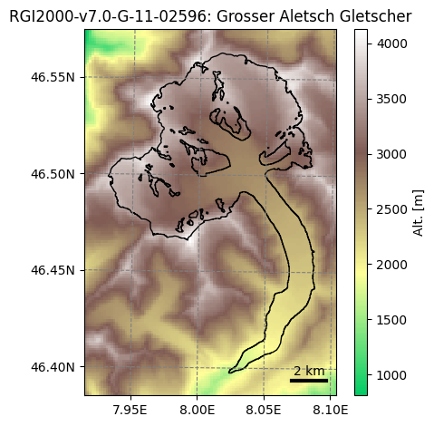
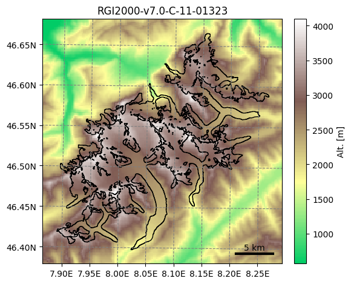

RGI version 7 in OGGM#
As of v1.6.3, OGGM supports a complete modelling workflow with RGI version 7. The outlines can be used to create glacier directories, and we have prepared pre-processed directories for both the “glacier” and “glacier-complex” products. To do so, we had to make a few simplifications and assumptions because RGI7 currently lacks two necessary external products: reference ice thickness and geodetic mass balance estimates.
Therefore, the following methodology was used to overcome these limitations:
we calibrated OGGM using the regional mass-balance estimates from Hugonnet et al., (2021), assuming the regional average is constant for all glaciers in a region (as done in Zekollari et al., 2024). This is a relatively strong assumption.
For the ice volume, we applied regional GlenA values obtained by calibrating OGGM with RGI6 to the Farinotti et al., (2017) estimates. As a result, any volume differences between RGI6 and RGI7 arise solely from updated glacier outlines, not data or methods changes.
Finally (less critical, but useful), we aggregated the RGI7G results to the glacier-complex level and re-ran the inversion on RGI7C, tuning it to match the RGI7G totals. This allows us to produce ice-thickness maps at the glacier complex scale without artefacts.
The resulting glacier directories can be accessed as shown below.
# Libs
import matplotlib.pyplot as plt
import xarray as xr
# Locals
import oggm.cfg as cfg
from oggm import utils, workflow, graphics
RGI7G: “Glacier” product#
# Initialize OGGM and set up the default run parameters
cfg.initialize(logging_level='WARNING') # print less log messages than the default
# Local working directory (where OGGM will write its output)
cfg.PATHS['working_dir'] = utils.gettempdir('OGGM_rgi7_run', reset=True)
# Aletsch
rgi_ids = ['RGI2000-v7.0-G-11-02596']
# Go - get the pre-processed glacier directories
# You have to explicitly indicate the url from where you want to start from
base_url = 'https://cluster.klima.uni-bremen.de/~oggm/gdirs/oggm_v1.6/L3-L5_files/2025.6/elev_bands/W5E5/regional_spinup/'
gdirs = workflow.init_glacier_directories(rgi_ids, from_prepro_level=3, prepro_base_url=base_url,
prepro_rgi_version='70G', prepro_border=10)
gdir = gdirs[0]
2026-04-11 17:37:33: oggm.cfg: Reading default parameters from the OGGM `params.cfg` configuration file.
2026-04-11 17:37:33: oggm.cfg: Multiprocessing switched OFF according to the parameter file.
2026-04-11 17:37:33: oggm.cfg: Multiprocessing: using all available processors (N=4)
2026-04-11 17:37:34: oggm.workflow: init_glacier_directories from prepro level 3 on 1 glaciers.
2026-04-11 17:37:34: oggm.workflow: Execute entity tasks [gdir_from_prepro] on 1 glaciers
graphics.plot_domain(gdir)

RGI7C: “Glacier complex” product#
# Aletsch complex
rgi_ids = ['RGI2000-v7.0-C-11-01323']
# Go - get the pre-processed glacier directories
# You have to explicitly indicate the url from where you want to start from
base_url = 'https://cluster.klima.uni-bremen.de/~oggm/gdirs/oggm_v1.6/L3-L5_files/2025.6/elev_bands/W5E5/regional_spinup/'
gdirs = workflow.init_glacier_directories(rgi_ids, from_prepro_level=3, prepro_base_url=base_url,
prepro_rgi_version='70C', prepro_border=10)
gdir = gdirs[0]
2026-04-11 17:37:40: oggm.workflow: init_glacier_directories from prepro level 3 on 1 glaciers.
2026-04-11 17:37:40: oggm.workflow: Execute entity tasks [gdir_from_prepro] on 1 glaciers
graphics.plot_domain(gdir)
